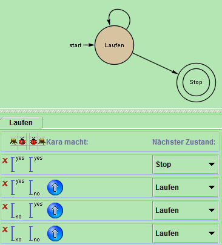
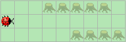
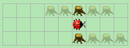
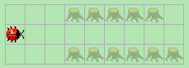
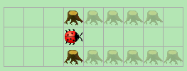
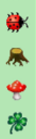
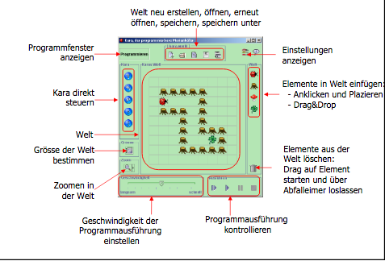
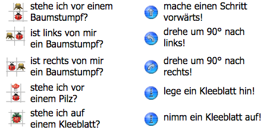

Kara der Tunnelsucher (einfach):
Aufgabenstellung:
"Kara sucht den Eingang eines geraden Tunnels (Feld 2a). Schreiben Sie ein Programm, das ihn auf dem ersten Feld im Tunnelinnern anhalten lässt. Aber Achtung: manche Tunnels haben zunächst eine einseitige Wand, manche links, manche rechts."

Abbildung 1: Screenshot des Programmcodes

Abbildung 2: Foto von "Karas Welt" (Vorlage 1), vor dem Start des Programms

Abbildung 2: "Karas Welt" (Vorlage 1), nachdem das Programm beendet wurde.

Abbildung 3: Foto von "Karas Welt" (Vorlage 2), vor dem Start des Programms

Abbildung 4: "Karas Welt" (Vorlage 2), nachdem das Programm beendet wurde.
Programmordner in Format ".zip" zum Download hier einzusehen.
Wir hatten bei der Aufgabe keine Probleme und Kara tut was es soll.
Erklärung von Kara:
In Karas Welt gibt es:
Kara, einen Marienkäfer, den man Programmieren kann.
Unbewegliche Baumstümpfe
Bewegliche Pilze
Und Kleeblätter die Kara ablegen und aufnehmen kann. (siehe Abbildung 5 (v. O. n. U.)

Abbildung 5: Karas Bedienelemente

Abbildung 6: Karas Bedienelemente am Fenster - Hier geht es zur Quelle

..............Sensoren...............................Bedienelemente
Abbildung 7: Karas Bedienelemente und Sensoren - Hier geht es zur Quelle
Created with HTML